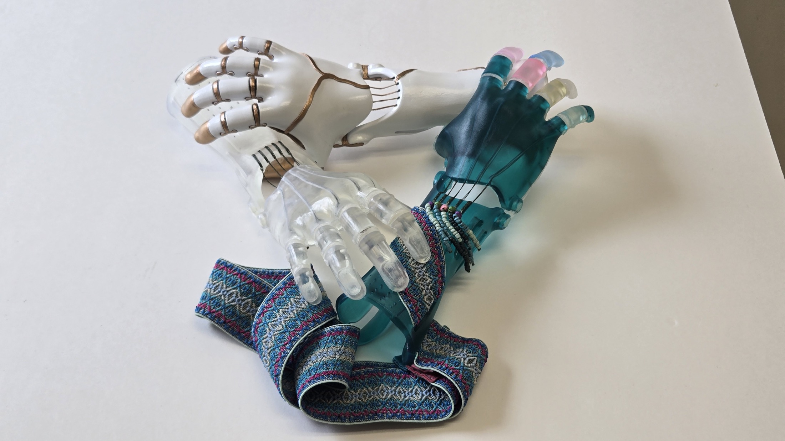
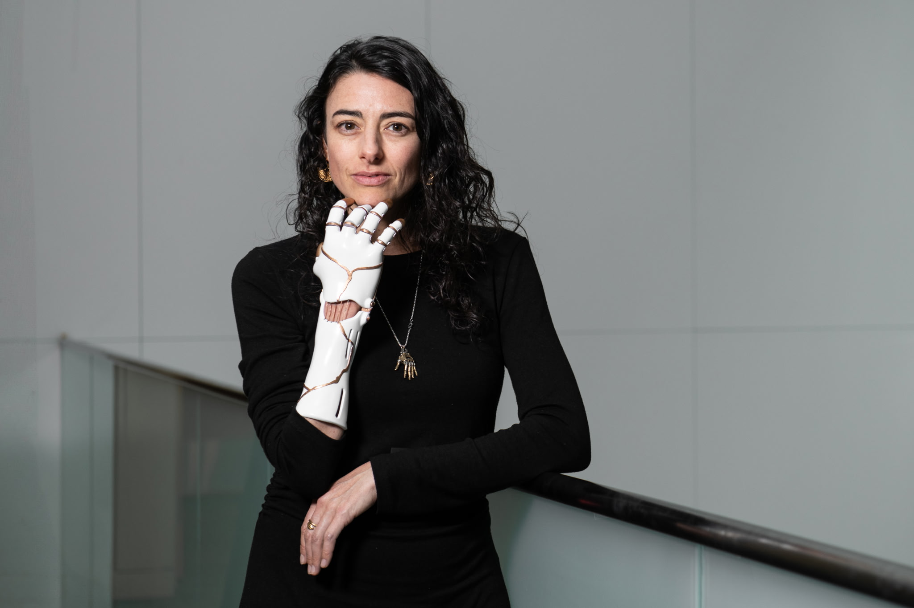
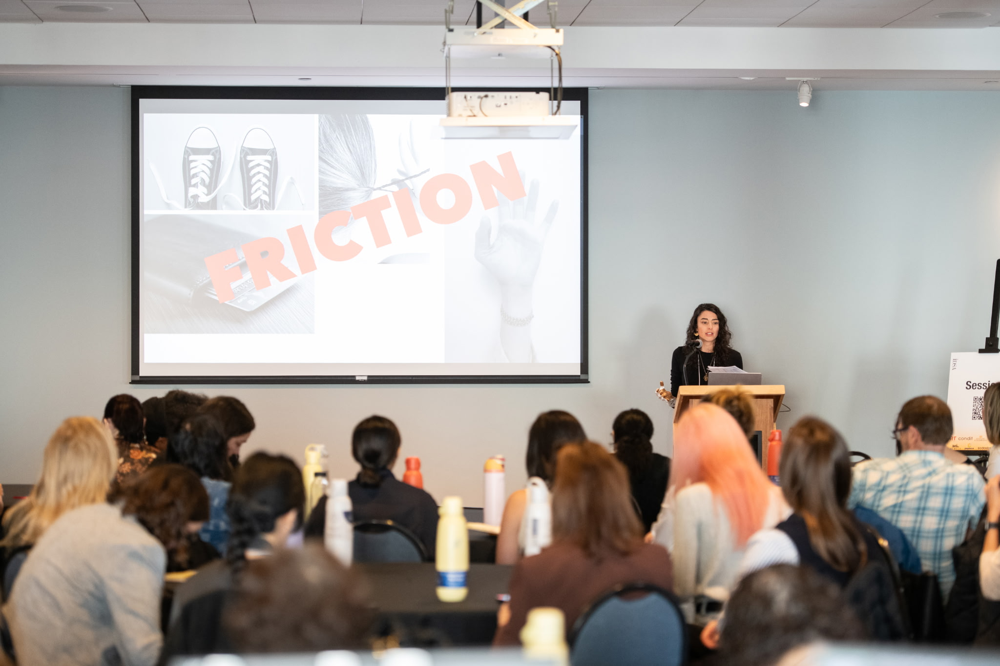
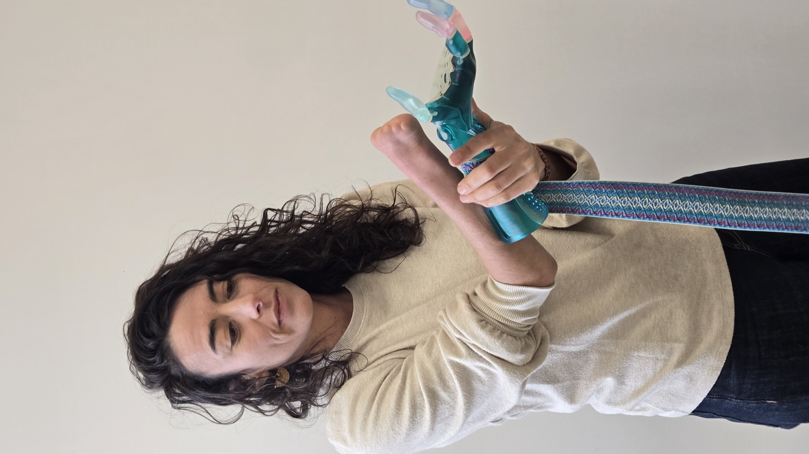
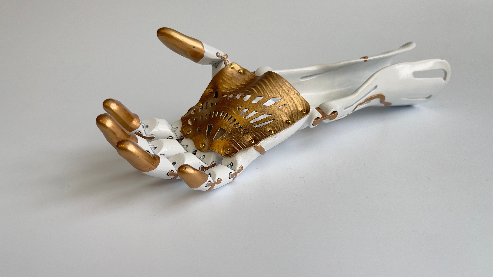
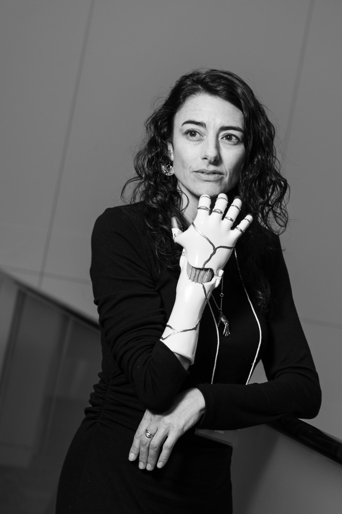

Jimena's Story
From Stigma to Statement
Jimena's journey moved from uncomfortable, impersonal prosthetics toward expressive design rooted in identity and pride.

01
Born Different, Not Broken
Jimena was born in Colombia without a fully developed right hand. Growing up, she learned to navigate a culture where disability was often surrounded by stigma and rarely discussed openly. Rather than embracing difference, many people felt pressure to hide it or overcome it quietly.
Over the years, she experimented with and often abandoned several prosthetic devices, hoping they would become part of her everyday life. While they offered functionality, they often felt clinical, generic, and disconnected from her identity.
As both a prosthetic user and an industrial designer, Jimena began to recognize a gap in the field. Most prosthetics were designed to solve technical problems, but very few considered the emotional relationship between a person and the device they wear every day.
"A prosthetic isn't just a tool. It's part of how someone experiences and presents themselves to the world."


02
When Design Falls Short
Many prosthetic devices are evaluated primarily through performance metrics such as fit, grip, and strength, durability, weight, and functionality. While these qualities are essential, they tell only part of the story.
Confidence, identity, and self-expression are equally important. Prosthetic devices that fail to reflect the person wearing them are often abandoned, regardless of their technical capabilities.
For Jimena, the challenge wasn't simply building a better hand. It was rethinking the relationship between people and their prosthetics.
03
Designing Around the "Puñito"
As industrial designers, Jimena and her research team stepped into a field that was largely unfamiliar to them. To better understand how prosthetic feet function, they partnered with orthotics and prosthetics specialists from O&P Mexico, who generously guided them through the technical and clinical aspects of prosthetic design.
Through this collaboration, the team gained valuable insight into the complexity of prosthetic systems and the importance of grounding design decisions in medical and biomechanical knowledge.
This experience revealed a significant opportunity: to bridge the gap between industrial design and the orthotics and prosthetics field. By combining technical expertise with a human-centered design approach, Jimena and her team began to explore new ways to improve both the functionality and the lived experience of prosthetic users.
"My disability is not the subject of the research, it is the expertise that revealed the opportunity."


04
The Kintsugi Hand
One of the most meaningful outcomes of the project was the development of a hand inspired by Kintsugi, the Japanese art of repairing broken pottery with gold.
Instead of hiding difference, the design celebrates it.
White surfaces and gold accents transform the prosthetic into something expressive, elegant, and deeply personal. Rather than feeling like a medical device, it becomes an expression of identity and an invitation to start conversations.
"Good design doesn't hide a story. It helps tell it."
05
Beyond One Hand
This project began with Jimena's experience, but its vision reaches far beyond a single prosthetic.
By bringing the human-centered perspective of industrial design into the field of orthotics and prosthetics, this work explores new ways to improve not only functionality, but also identity, aesthetics, emotional well-being, and long-term prosthesis adoption.
The long-term goal is to develop prosthetic technologies that people genuinely want to wear while fostering collaboration among prosthetic users, prosthetists, designers, engineers, clinicians, researchers, and industry partners to help shape the future of personalized prosthetic care.
Join the Mission